[竹北] Eric Tsai 私廚
| 餐廳名稱: | Eric Tsai 私廚 |
|---|---|
| 地 址: | 新竹縣竹北市環北路一段286巷19弄68號 |
| 營業時間: | 預約制 |
| 電 話: | 0932 374 384 |
頗有名氣的 Eric Tsai 私廚，多年前在新竹市舊址吃過一次，當時是吃1500元無菜單料理， 印象還不錯。得知他搬來竹北一陣子了，今年的生日，就挑這間餐廳來慶生。
新地方在竹北台元科技園區附近，一小段距離的田野之中。在台元園區大門口附近， 穿過一條只有一線道、無法錯車的小徑，再穿過高速公路涵洞，沿著高速公路開 約100公尺，就到了Eric Tsai私廚的新家庭園入口，新家豪華氣派，門口可停車。 標誌是草寫 E1999，不過下圖照片沒照好，1999部分亮到看不見了。
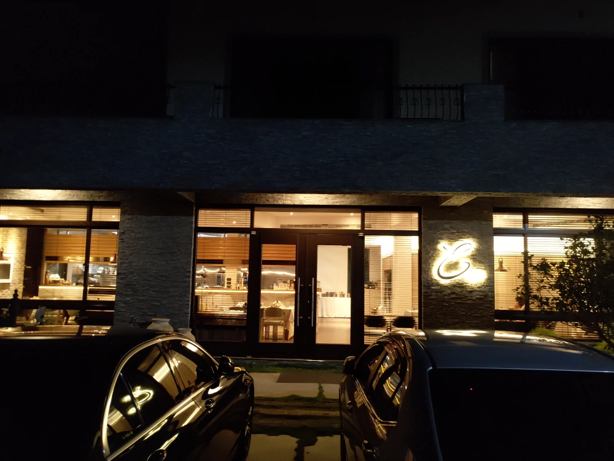
室內豪華程度，比新竹市時強太多了，座位也多很多。加上這些年的通膨，價位也變成一位最低2000元了。 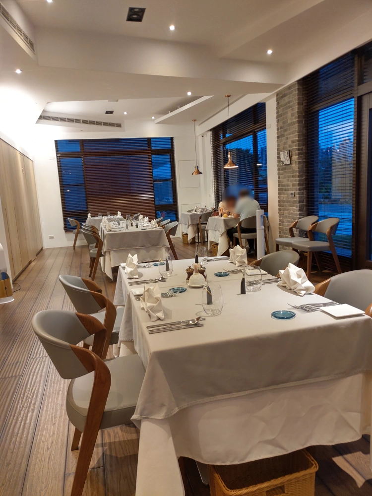
廚房當然也變大了，裝備齊全，廚師應該很高興。 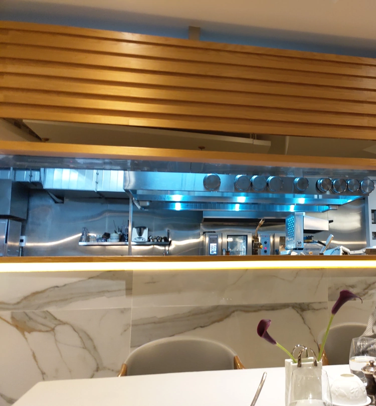
第一道是前菜，國王鮭魚。配料有酸豆、碎洋蔥、起司粉、幾片蔬菜。 那個泥忘記了，不是薯泥，服務生宣稱有蘋果與堅果味。 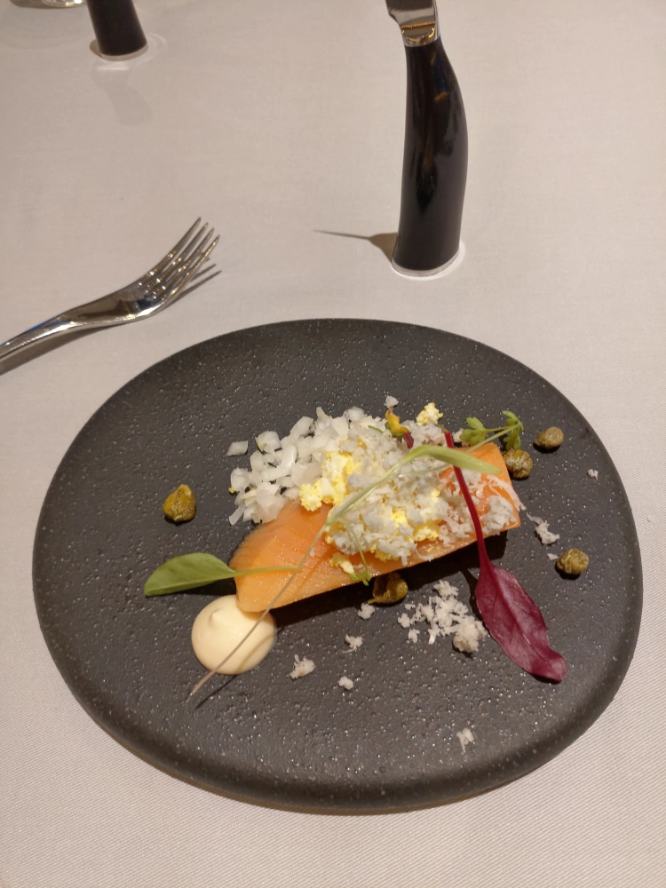
第二道是一個 圓形的法國麵包，但是忘了拍了，用這張代替。左邊 是高級奶油，服務生講了一個品牌，但一聽就忘。右邊是牛角做成的抹刀。 至於麵包，不會燙，但脆的不得了，抹奶油或吃的時候，一直掉屑屑。 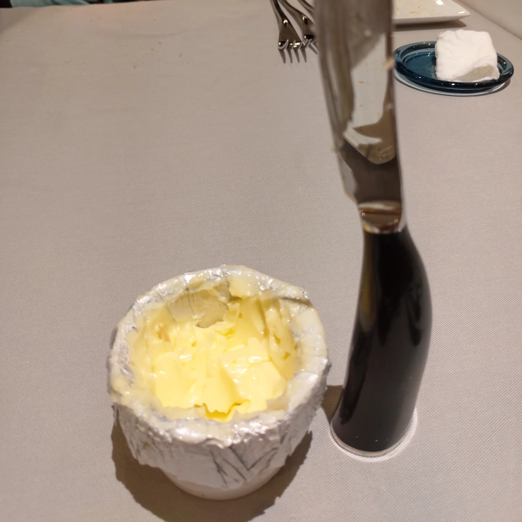
蘑菇濃湯，紅色小圓球一問是紅胡椒粒，右邊是一小塊酥皮吧? 脆脆的。 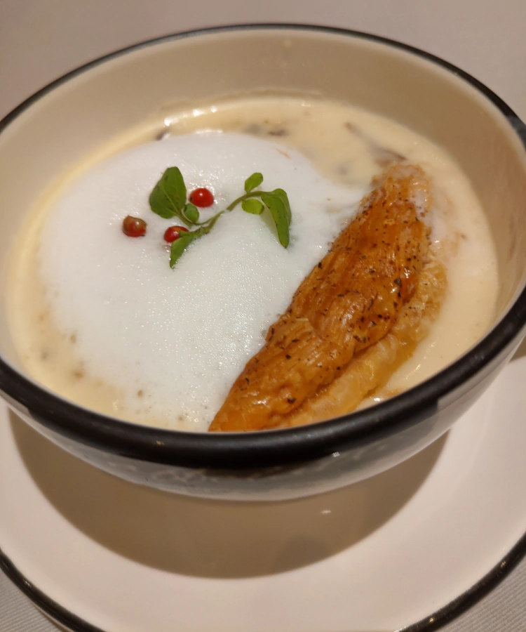
北海道生食級干貝，外表煎過，中間仍是生的。搭配一些少見的青菜。 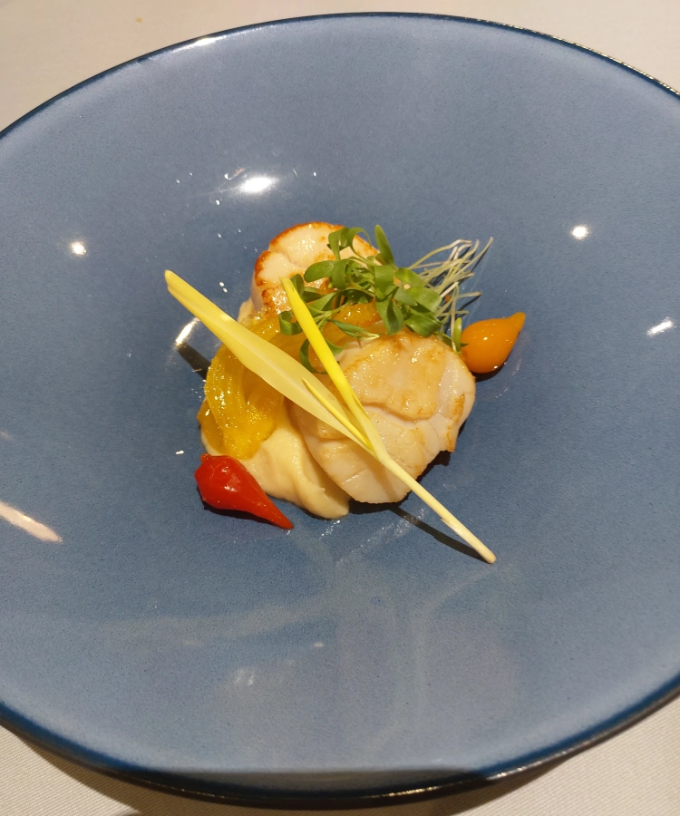
法國蘆筍 佐 檸檬奶油醬。小花也可以吃。 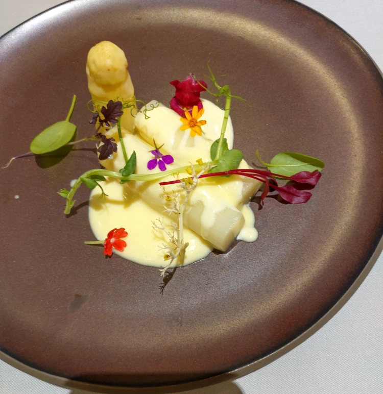
最後當然是主菜，牛排佐牛肉原汁。最左邊看起來很像干貝，正覺得竟然有重複的食材， 沒想到一吃，是杏鮑菇，這是在耍分子料理嗎?右邊就真的是薯泥了。 其他就是一些蔬菜。 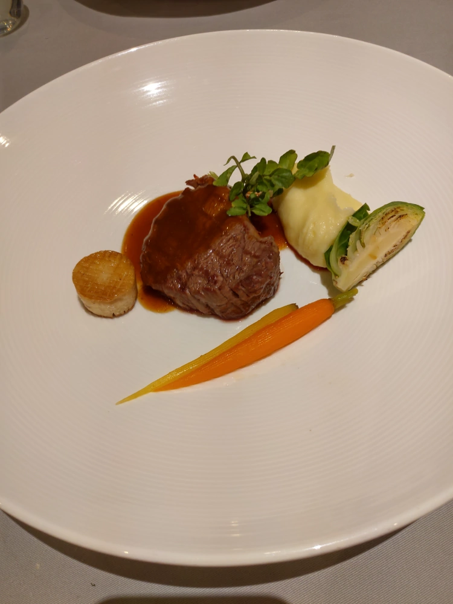
然後，服務生拿一個木盒，裡面許多格，每格都是一種茶包，讓客人選。咖啡則有三種 - 美式、Espresso 、Caffè latte 。我就挑了 Caffè latte 。 挑完，服務生就去製作飲料，然後連甜點一起端上來。每杯飲料都附一片焦糖餅乾。 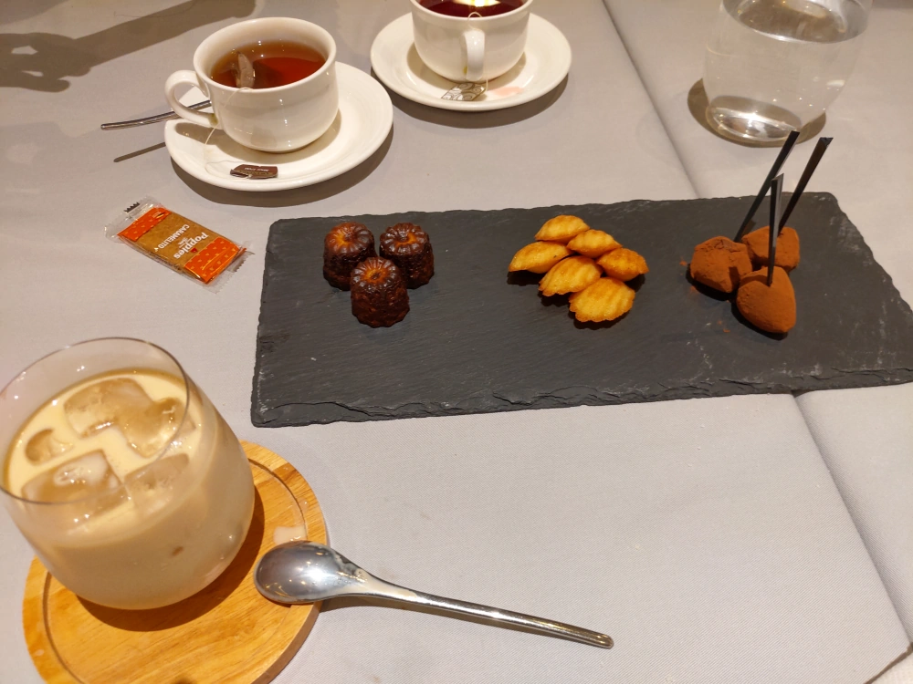
宣稱是招待的馬卡龍。 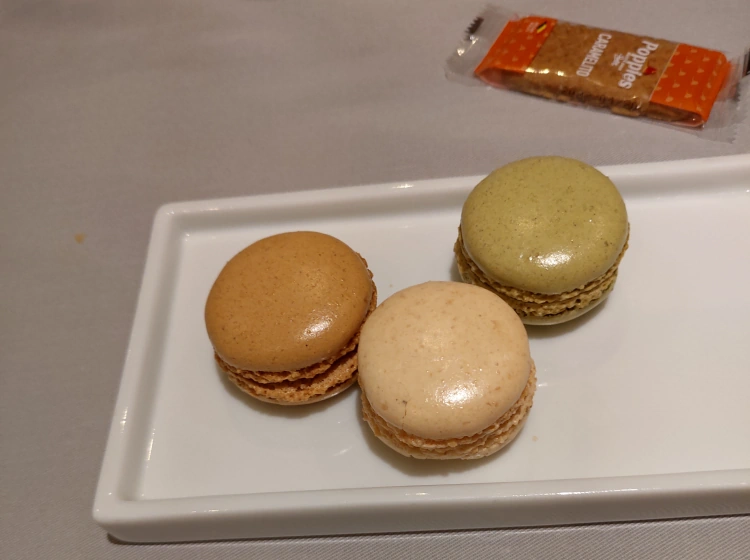
Eric Tsai私廚，每一道菜都好吃又美觀。環境也不錯，門口還能停好幾台車。 就是價位高了些，要慶祝時才能來享用大餐。 不過對餐廳而言，應該會有 不少機會可以接台元園區裡面賺錢大公司的部門聚餐、招待貴賓吧， Eric Tsai 挺有眼光的。